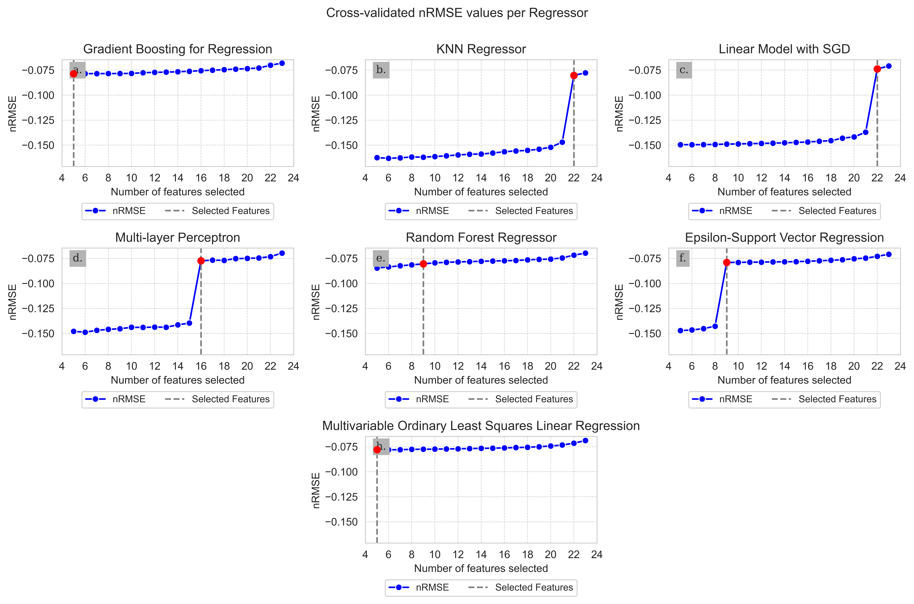

The 2_1_hpc_script.py was executed on a HPC with the following specifications:
CPUs per task: 128
RAM: 128Gb
Python 3.10.12 (main, Jun 11 2023, 05:26:28) [GCC 11.4.0]
Linux-5.15.0-127-generic-x86_64-with-glibc2.35
Packages:
joblib 1.3.2
numpy 1.26.0
scipy 1.11.4
session_info 1.0.0
sklearn 1.3.1
Script arguments:
number of threads = 16
number of parallel jobs = 16
Code
algo_train_data_dict = {}for name in algorithm_dict.keys():try:withopen(f"{config.get('pickle').get('rfe_cv_scores')}{name}.pickle", "rb") as cv_pickle: cv_scores_dict = pickle.load(cv_pickle) algo_train_data_dict[name] = {"cv_dict": cv_scores_dict}exceptFileNotFoundError:print(f"Didn't find cv scores for {name}. Continue with the next algorithm...")withopen(config.get("pickle").get(f"algo_data"), "wb") as algo_pickle: pickle.dump(algo_train_data_dict, algo_pickle)
Code
feature_selection_count = {}for algo, sub_dict in algo_train_data_dict.items():for f_num, values insorted(sub_dict.get("cv_dict").items(), key=lambda x: x[0]):if values.get("cv_score") >= config.get('cv_threshold'): feature_selection_count[algo] = (f_num, values.get("cv_score"))breakprint(f"Features selected based on RMSE >= {config.get('cv_threshold')}:\n{feature_selection_count}")
Features selected based on RMSE >= -0.081:
{'gbr': (5, -0.07870458021044853), 'knn': (22, -0.08029281826922212), 'rfr': (9, -0.08041851052283368), 'svr': (9, -0.07902270440084168), 'sgd': (22, -0.07380831944994182), 'mlp': (16, -0.07731096405060946), 'mlr': (5, -0.07802815149540221)}
Code
fig, axs = plt.subplot_mosaic([['a.', 'b.', 'c.'], ['d.', 'e.', 'f.'], ['.', 'h.', '.']][:int(np.ceil(len(algorithm_dict.keys())/2))], layout ='constrained', figsize=(3* config.get('plot_size'), int(np.ceil(len(algorithm_dict.keys())/3)) * config.get('plot_size')/1.5),)fig.set_tight_layout(True)fig.suptitle("Cross-validated nRMSE values per Regressor\n")all_y = []for name in config.get("plot_titles").keys():if name in algo_train_data_dict.keys():for cv_dict in algo_train_data_dict.get(name).get("cv_dict").values(): all_y.append(cv_dict.get("cv_score"))for ax_label, (name, title) inzip(axs.keys(), config.get("plot_titles").items()):if name in algo_train_data_dict.keys(): ax = axs.get(ax_label) # Get the corresponding axis for this plot# Check if data exists for the current algorithmif name notin algo_train_data_dict.keys():continue# Extract CV data cv_dict = algo_train_data_dict.get(name).get("cv_dict") x =list(cv_dict.keys()) # Number of features y = [cv_dict.get(x_i)["cv_score"] for x_i in x] # Corresponding RMSE values# Plot the data sns.lineplot(x=x, y=y, ax=ax, marker='o', color='b', label='nRMSE')# Find optimal point optimal_x = feature_selection_count.get(name)[0] optimal_y = feature_selection_count.get(name)[1]# Highlight the optimal point ax.scatter(optimal_x, optimal_y, color='red', zorder=5)# ax.text(optimal_x, optimal_y + 0.01, # Adjust offset for better visibility# f"Selected Features: {optimal_x}\nRMSE: {optimal_y:.2f}", # color='red', fontsize=9)# Add reference line ax.axvline(optimal_x, color='gray', linestyle='--', label='Selected Features')# Customize the plot ax.legend(fontsize=9, loc="upper center", bbox_to_anchor=(0.5, -0.30), ncol=2,) ax.grid(True, which='both', linestyle='--', linewidth=0.5) ax.xaxis.set_major_locator(ticker.MultipleLocator(2)) ax.xaxis.set_major_formatter(ticker.FormatStrFormatter("%d")) high, low = (max( algo_train_data_dict.get(next(iter(algo_train_data_dict))) .get("cv_dict") .keys() )+1,min( algo_train_data_dict.get(next(iter(algo_train_data_dict))) .get("cv_dict") .keys() )-1, ) ax.set_xlim(low, high) ax.set_ylim(min(all_y) *1.05, max(all_y) *0.95) ax.set_xlabel("Number of features selected") ax.set_ylabel("nRMSE") ax.set_title(f"{title}") trans = mtransforms.ScaledTranslation(10/72, -5/72, fig.dpi_scale_trans) ax.text(0.0, 1.0, ax_label, transform=ax.transAxes + trans, fontsize='medium', verticalalignment='top', fontfamily='serif', bbox=dict(facecolor='0.7', edgecolor='none', pad=3.0))plt.savefig(f"plots/cv_scores.png", dpi=300, bbox_inches="tight")plt.show()

CV nRMSE scores for different Regressors for Feature Selection